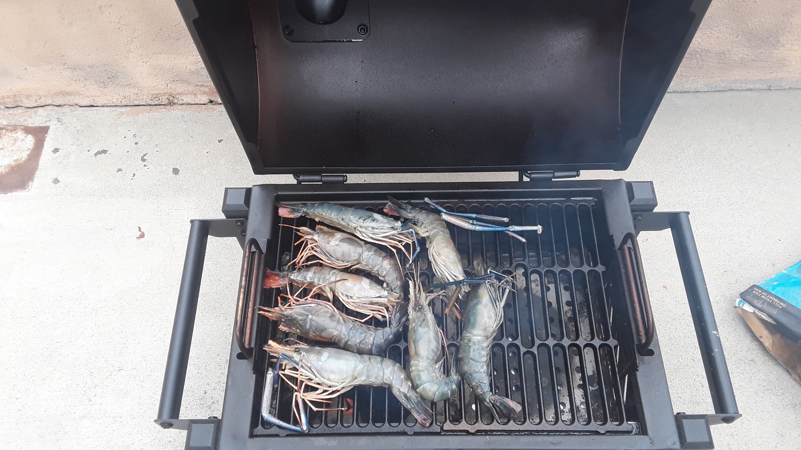
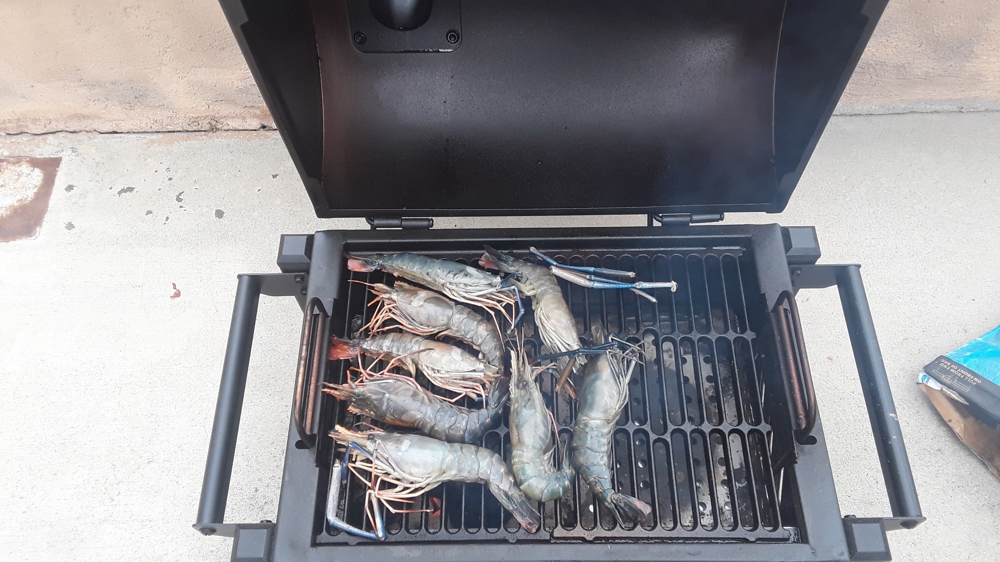
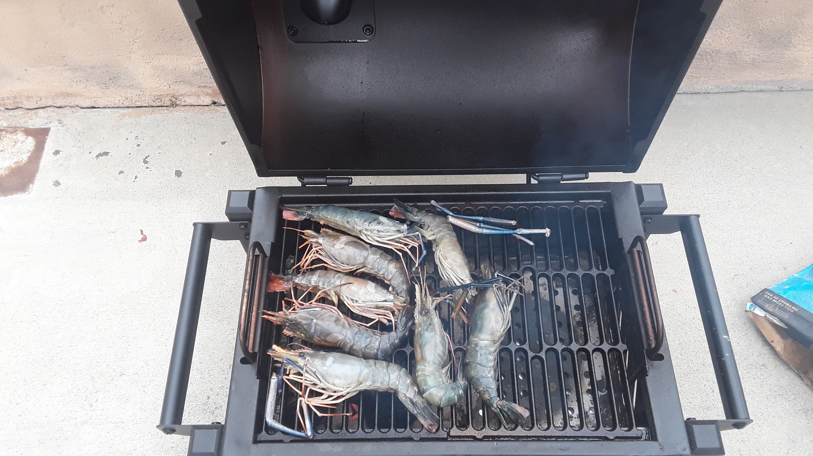

Edwin Lu
Hello my name is Edwin Lu. I am currently a 1st year UCR Psychology major. My previous education was Canyon Highschool.I am passionate on how to help people learn and prosper at their job. I wish to help people to best of my abilities and wish for the enviroment to be safe because I am passionate about enviromental science. I am also passionate about history and would like to know about modern history and also possible ancient history for specifically arts of acting and literature. I enjoy philosophy and thinking of possible questions and answers which help broaden the mind.I am aware I am mundane and at times lack a good work ethics to finsh jobs that are important not only for my well being but also for others.I have taken many classes such as home economics which has taught me how to take care of myself by teaching cooking and sewing. These skills which are helpful for an independent person.Also many english classes which teach many aspects of life such as questioning the world itself and also how to write something very compelling to many people.
I've have lived in both North Carolina and Southern California. I don't play sports that much, however I have done leadership oportunity such as vicevpresident of the club known as linen n love for 2 years. I also know spanish from taking spanish for 3 years and also being a part of spanish honor soceity which gave me fun activities for culture and also volunteer work.I love romance stories and comedies. I enjoy settings of fantasty and urban fantasty. However I am also fine with non-fantasty world and just the mundane world of romcoms as well. I believe I am a thoughtful person who is empathetic and can help brighten a person day with my psotive-mind set and advice. I wish for the ability to do good and make my parents proud of me. I wish to have wealth to live in good place, but also to be deserving of it and have the ability to enjoy life.
I have volunteered at foodbanks and have donated can food. I have an older brother who I am in good standing with and also goes to UC San Diego. I am friends with people who know a lot about music and also people who love psychology. I wish to be an amicable person making good amount of friends. I love to sing music. My favorit genre are rock, pop, folk, musicals, Japanese pop,and ballads. I love a good musicals which can show emotions and great actings, also special effects and set designs. Somtimes I wonder if I am a good friend because sometimes I can be oblivious and also make bad jokes that may poke at my friends too much. I enjoy people who are hardworking and are filled with kindness such as Speedy Gonzales the fastest mouse from Mexico, Jack Mcbrayers character of Keneth from 30s rock who is an enthuastic page who loves telvisions, and also Tohru Honda who despite having troubling circumstances has chosen to keep a postive outlook and try their best working in life.
Experience
Volunteer and School experience
• Worked as a Linen N Love worker
• Camp Leader for PWC camp for Psi Chi
• Worked as a memeber of Sociedad Honoraria Hispanica
Filer
• Helped file away papers for physical copy
• Knowledge of Excel
• Ability to work for 8 hours of filing
• Was able to file 100 files away per day
Education
UC Riverside
Portfolio
 



